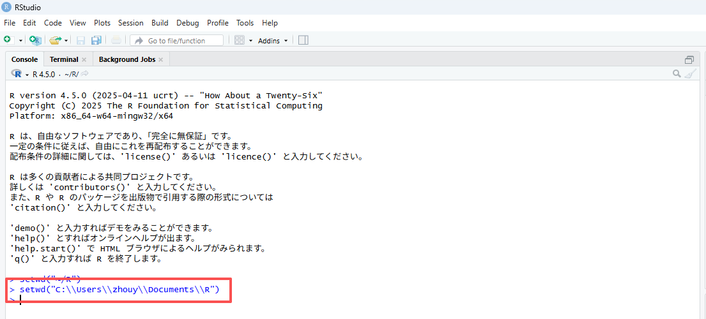
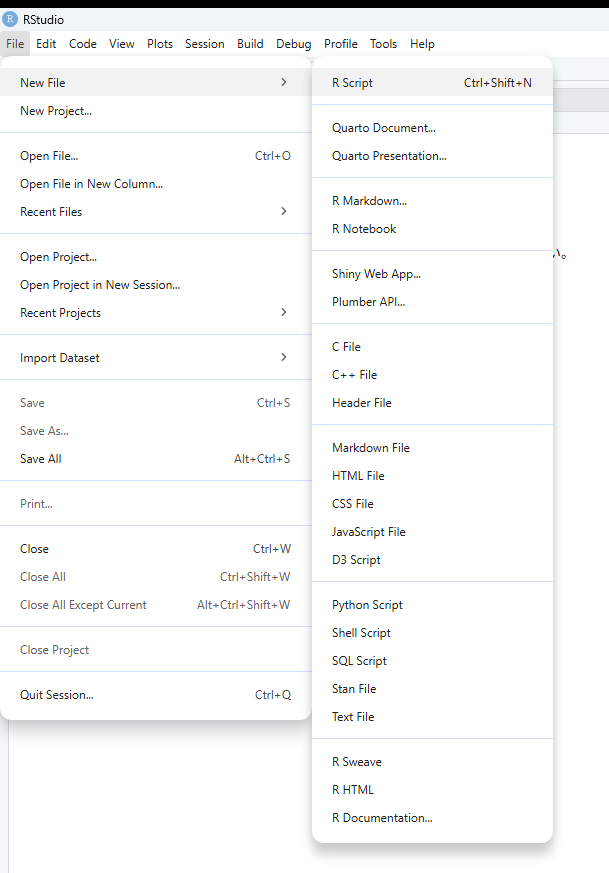
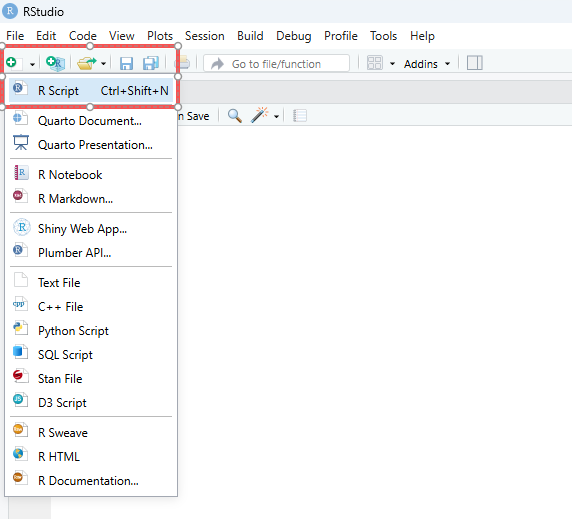
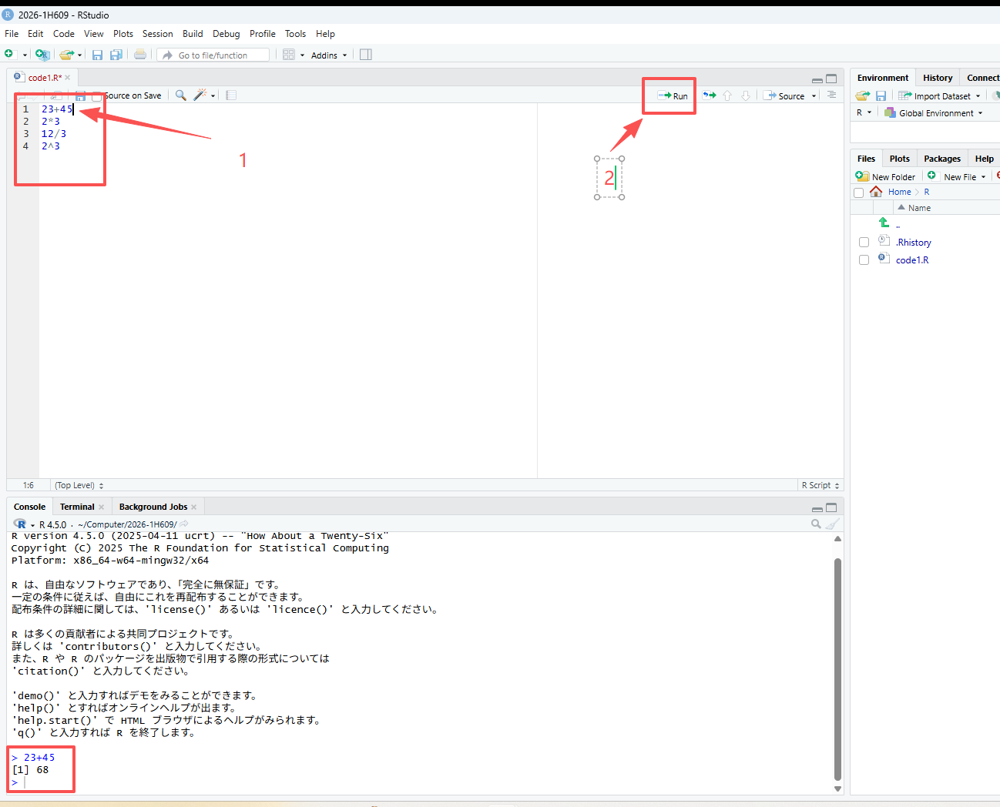
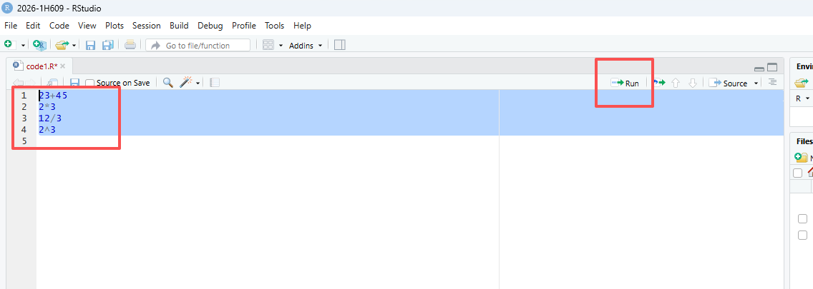
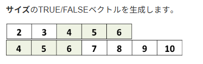
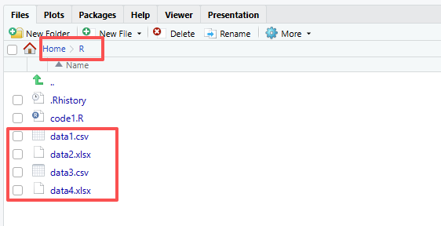

2 第２回（４月２０日）：RStudioでデータの操作と計算
2.1 準備
2.1.2 RStudioを起動し、作業ディレクトリ（パス、path）をRに設定しま。
2.1.2.1 1. setwd()関数を使う
Rフォルダに移動します。パスを選択し、コピーします。
RStudioを開き、コード:
setwd("C:\\Users\\xxx\\Documents\\R")ありますいはsetwd("C:/Users/xxx/Documents/R")を入力します
注意：パスを " " で囲み、 \ を \\ または / に書き換えてください。


2.2 スクリプトの作成
File–>New File–>R Scriptをクリックします。Untitled1というファイルが作成されます。
ありますいは、
Fileの下のボタンをクリックし、R Scriptをクリックします。Untitled1というファイルが作成されます。
2.3 スクリプトの実行
計算を実行してみる。
スクリプトにコードを入力し、その行にカーソルを置いて実行（Run）をクリックすると、結果が出力されます。
もう１つの方法は、Ctrl-Enter（Macの場合はCommand-Enter）を同時に押す方法です。

複数行を実行したい場合、領域を指定して（Ctrl-A）、（Run）をクリックしますか、Ctrl-Enterで実行します。

2.4 データ型（Data Types）
- Numeric（数値型）: Integer（整数） と Double（実数）
- Character（文字型）:
"Hello", "Data Science", "2026" - Logical（論理型）:
TRUEまたはFALSE
2.5 主なデータ構造
2.5.1 ベクトル (Vector)
同じデータ型の値を一列に並べた、最も基本的な構造です。
特徴: すべての要素が同じ型（すべて数値、またはすべて文字など）であります必要があります。
値は、 c()関数 ( cは要素を結合しますためのc関数)を使用してベクトルに割り当てられます。丸括弧を開閉し、異なる要素をカンマで区切って配置します。
vector1 <- c(329, 45, 12, 28)
# 空のベクトルは次のように作成できます。
vecempty <- vector()
# 長さ5の空の数値ベクトル
vecnumempty <- vector(mode="numeric", length=5)
# 長さ8の空の数値ベクトル
veccharempty <- vector(mode="character", length=8)
# 連続する数字のシーケンスを作成します。
vecnum <- 10:16
# 以下の略
vecnum <- c(10, 11, 12, 13, 14, 15, 16)
# 注意：両端（10と16）を含む2.5.1.2 ベクトルから要素を抽出する
# ベクトルの要素を再割り当てする
vector1[2] <- 31
vector1["orange"] <- 31
# ベクトルの要素を削除する
vector1[-3]
# ベクトルの結合
v1 <- 2:5
v2 <- 4:6
v3 <- c(v1, v2)
# ベクトルの末尾に要素を追加することもできます
v3 <- c(v3, 19)論理演算子
| 演算子 | 意味 |
|---|---|
< |
未満 |
<= |
以下 |
> |
より大きい |
>= |
以上 |
== |
等しい（ちょうど） |
!= |
等しくない |
! |
〜ではない（否定） |
x \| y |
x または y |
x & y |
x かつ y |
2.5.1.3 数値ベクトルの操作
# 要素aのうち、2に等しい要素はどれですか？
a <- 1:5
a == 2
# aのどの要素が2よりも優れていますか？
a <- 1:5
a > 2
# 条件を満たすベクトルの要素を抽出する。
a >= 2
# 条件を満たす（TRUEの値となる）実際のサブベクトルを抽出する
a[a >= 2]
# 条件を満たす要素がいくつあるかを数える
length(a[a >= 2])
# ベクトルに2を加えると、ベクトルの各要素に2が加算されます。
a <- 1:5
a + 2
# 同じ長さのベクトル同士を掛け合わせる
a <- c(2, 4, 6)
b <- c(2, 3, 0)
a * b
# ベクトルを別の短いベクトルで乗算する
a <- c(2, 4, 6)
b <- c(2, 3, 0)
a * b要約統計量 関数一覧
| 関数 | 説明 | 備考 |
|---|---|---|
mean(x) |
平均値 (Mean) | 全要素の合計を要素数で割った値 |
median(x) |
中央値 (Median) | データを大きさ順に並べた時、中央にくる値 |
min(x) |
最小値 (Minimum) | ベクトル内の最も小さい値 |
max(x) |
最大値 (Maximum) | ベクトル内の最も大きい値 |
var(x) |
分散 (Variance) | データの散らばり具合を表す指標 |
summary(x) |
要約統計量 (Summary) | 最小、最大、平均、中央値、四分位数を一括表示 |
2.5.1.4 ベクトルの比較

# aに含まれる要素のうち、 bにも含まれるものはどれですか？
a <- 2:6
b <- 4:10
a %in% b
# aの要素のうち、 bに含まれる実際の要素を取得します。
a <- 2:6
b <- 4:10
a[a %in% b]
# 2つのベクトルの交点を取得します。
intersect(a, b)
# 2つのベクトルが完全に同一かどうかを確認します
identical(a, b)
# 文字ベクトルは、数値ベクトルと同様に操作されます。
k <- c("mRNA", "miRNA", "snoRNA", "RNA", "lincRNA")
p <- c("mRNA","lincRNA", "tRNA", "miRNA")
k %in% p
k[k %in% p]
# ベクトルmからexonではない要素を選択する
m <- c("exon", "intron", "exon")
m != "exon"
m[m != "exon"]2.5.2 因子（Factor）
因子とは、他のベクトルの構成要素を離散的に分類（グループ化）するために使用されるベクトルオブジェクト（1次元）です。
因子は主に統計モデリングに用いられますが、グラフ作成にも役立ちます。
ファクター関数を使用すると、次のようなファクターを作成できます。
e <- factor(c("high", "low", "medium", "low"))
str(e)
# 文字ベクトルと因子の例
# 要因ベクトル
e <- factor(c("high", "low", "medium", "low"))
# 文字ベクトル
e2 <- c("high", "low", "medium", "low")
# ベクトルの構造を確認する
str(e)
str(e2)因子内のグループはレベルと呼ばれます。レベルは順序付けできます。 その後、数値ベクトルに適用されるいくつかの演算を使用できます。
2.5.3 行列 (Matrix)
ベクトルに「行」と「列」の概念を加えた、2次元の構造です。
特徴: ベクトルと同様、すべての要素が同じデータ型であります必要があります。
2.5.4 データフレーム (Data Frame)
実務で最も多用される構造です。表形式のデータ（Excelのようなイメージ）を扱います。行列よりも汎用的です。
特徴: 列ごとに異なるデータ型を持つことができます（例：1列目は名前（文字）、2列目は年齢（数値））。同じ長さでなければなりません。
データフレームは列ごとに構成されます。列は変数であり、行は各変数の観測値です。
2.5.4.1 データフレームを作成する
data.frame 関数を使用する場合
d <- data.frame(c("Maria", "Juan", "Alba"),
c(23, 25, 31),
c(TRUE, TRUE, FALSE))
# stringsAsFactors: 文字をFactorとしてではなく、文字型として扱うことを保証します
d <- data.frame(c("Maria", "Juan", "Alba"),
c(23, 25, 31),
c(TRUE, TRUE, FALSE),
stringsAsFactors = FALSE)
# 「stringsAsFactors = FALSE」が役立つ理由の例
# Create a data frame with default parameters
df <- data.frame(label=rep("test",5), column2=1:5)
# Replace one value
# df[2,1] <- "yes"
# Throws an error and doesn't replace the value !
# Create a data frame with:
df2 <- data.frame(label=rep("test",5), column2=1:5, stringsAsFactors = FALSE)
# Replace one value
df2[2,1] <- "yes"
# Works!行列をデータフレームに変換する：
2.5.5 リスト (List)
異なる型や、異なる構造のオブジェクトをひとまとめにできる「詰め合わせセット」です。
特徴: 数値、文字、ベクトル、さらには別のリストまで、何でも入れることができます。
異なるデータ型を混在できる: 数値、文字、論理値、さらにはベクトルやデータフレーム、別のリストさえも一つのリストの中に格納できます。
要素ごとに長さが違っても良い: 「3つの数値」と「10個の文字列」を一つのリストに共存させることができます。
階層構造を持てる: リストの中にリストを入れる（入れ子構造）ができるため、複雑なデータ構造を表現するのに適しています。
2.5.6 配列 (Array)
行列をさらに多次元（3次元以上）に拡張したものです。
特徴: すべて同じデータ型であります必要があります。立方体のようなデータの重なりをイメージしてください。
多次元構造: 「縦 × 横」の平面だけでなく、「奥行き」を持たせたデータの塊（立方体のようなイメージ）を作ることができます。
単一のデータ型: ベクトルや行列と同様に、格納できるのはすべて同じデータ型（すべて数値、またはすべて文字など）である必要があります。
添字（インデックス）でアクセス: 3次元のアレイであれば、[行, 列, 次元] のように3つの数字を使ってデータを取り出します。
2.6 特別な値
NULL: 空の状態NA: 欠損値NaN: 非数Inf/-Inf: 無限 / -無限
2.6.1 NULL: 空のオブジェクト
NULL はオブジェクトであり、式や関数が未定義の値を返した場合に返されます。
R言語では、NULL（大文字）は予約語であり、データ型が不明なデータをインポートした結果として生成される場合もあります。
2.6.2 NA：（利用不可）Rで認識される要素です。
# ベクトル内の欠損値を見つける
x <- c(4, 2, 7, NA)
# NAを見つける
is.na(x)
# NAを削除
na.omit(x)
x[ !is.na(x) ]
# 一部の関数は、デフォルトで、または特定の引数によって、NA（欠損値）を処理できます。
x <- c(4, 2, 7, NA)
# default arguments
mean(x)
# NAを削除して、平均値をとる
mean(x, na.rm=TRUE)
# 行列またはデータフレームでは、NA値を含まない行のみを残します。
mydata <- matrix(c(1:10, NA, 12:2, NA, 15:20, NA), ncol=3)
# NA を含まない行だけを残す
mydata[complete.cases(mydata), ]
# あるいは
na.omit(mydata)2.6.4 Inf: 限界を超えた数値
Inf は非常に大きな数値として扱われるため、計算を継続できるのが特徴です。
# ゼロ除算
10 / 0 # Inf
# 無限に何かを足しても無限
Inf + 1e10 # Inf
# 無限で割るとゼロになる
10 / Inf # 0
# Inf かどうかの判定
is.finite(10 / 0) # FALSE
# これらが一つのベクトルに混ざった場合、Rは以下のように判定します。
x <- c(1, NA, NaN, Inf)
is.na(x) # FALSE TRUE TRUE FALSE (NaNはNAとしてもカウントされる)
is.nan(x) # FALSE FALSE TRUE FALSE
is.infinite(x) # FALSE FALSE FALSE TRUE
is.finite(x) # TRUE FALSE FALSE FALSE (NAとNaNは「有限ではない」)クイック比較表
| 値 | 意味 | データ型 (typeof) | 長さ (length) | 主な発生理由 | 判定関数 |
|---|---|---|---|---|---|
| NULL | 存在しない・空 | NULL | 0 | オブジェクトの未定義、リスト要素の削除 | is.null() |
| NA | 欠損値 (不明) | logical, integer等 | 1 | アンケートの未回答、データの読み込み漏れ | is.na() |
| NaN | 非数 (計算不能) | double (numeric) | 1 | 0/0, 負の数の平方根など | is.nan() |
| Inf | 無限大 | double (numeric) | 1 | 1/0, 指数関数のオーバーフロー | is.infinite() |
2.7 データのインポート、保存
Rには、さまざまなファイル形式からデータをインポートするための関数やパッケージが用意されています。ここでは、Rにデータを読み込むための一般的な方法をいくつか紹介します。
データはMEATからダウンロードできます。
2.7.2 保存
# パスを正しく設定する
setwd("~/R")
# CSVファイルとして保存
data <- data.frame(participant_id = c(1, 2, 3, 4, 5, 6, 7, 8),
age = c(18, 19, 18, 22, 18, 19, 19, 18),
gender = c("male", "female", "male", "female", "female", "female", "male", "male"),
condition = c("high", "high", "low", "high", "low", "low", "low", "high"),
variable1 = c(9, 15, 9, 11, 4, 6, 4, 12))
write.csv(data, "data3.csv")
# xlsx ファイルとして保存
# Install and load the openxlsx package
if (!require("openxlsx")) install.packages("openxlsx") ## 初回のみインストールする
# library(openxlsx) ##初回のみロードする
# Save data as Excel file
write.xlsx(data, "data4.xlsx", sheet = 1)成功すると、正しいディレクトリにファイルが表示されます。

さらに詳しく知りたい場合は、こちらを参照してください：https://bookdown.org/dereksonderegger/444/importing-data.html#google-sheets
2.8 要約統計量
2.8.1 要約統計
要約統計量は、データセットの主な特徴を簡潔にまとめたものです。これには、中心傾向、ばらつき、形状などの指標が含まれます。
このsummary()関数は、データセット内の各変数に関する重要な統計情報を簡潔に概観します。最小値、第1四分位数、中央値、平均値、第3四分位数、最大値が含まれます。
# Create a data set
data <- data.frame(participant_id = c(1, 2, 3, 4, 5, 6, 7, 8),
age = c(18, 19, 18, 22, 18, 19, 19, 18),
gender = c("male", "female", "male", "female", "female", "female", "male", "male"),
condition = c("high", "high", "low", "high", "low", "low", "low", "high"),
variable1 = c(9, 15, 9, 11, 4, 6, 4, 12))
# データセットの要約統計量を計算する
summary(data)
# 変数の要約統計量を計算する
summary(data$variable1)